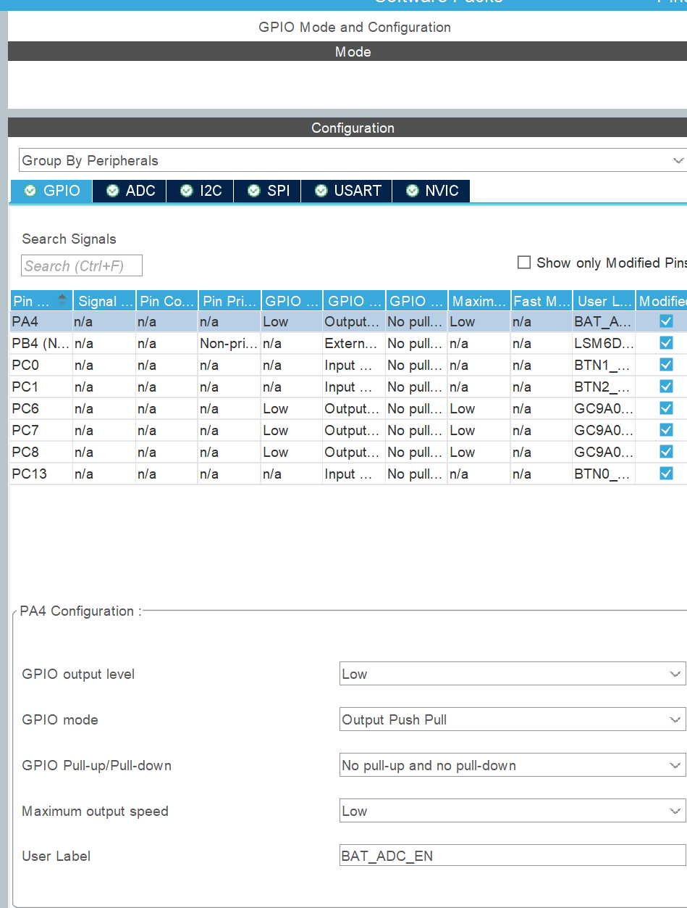
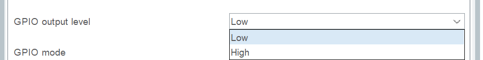
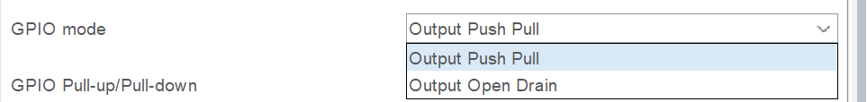
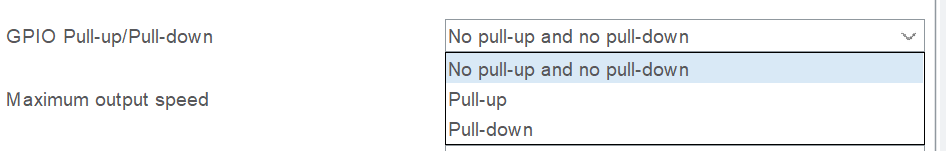
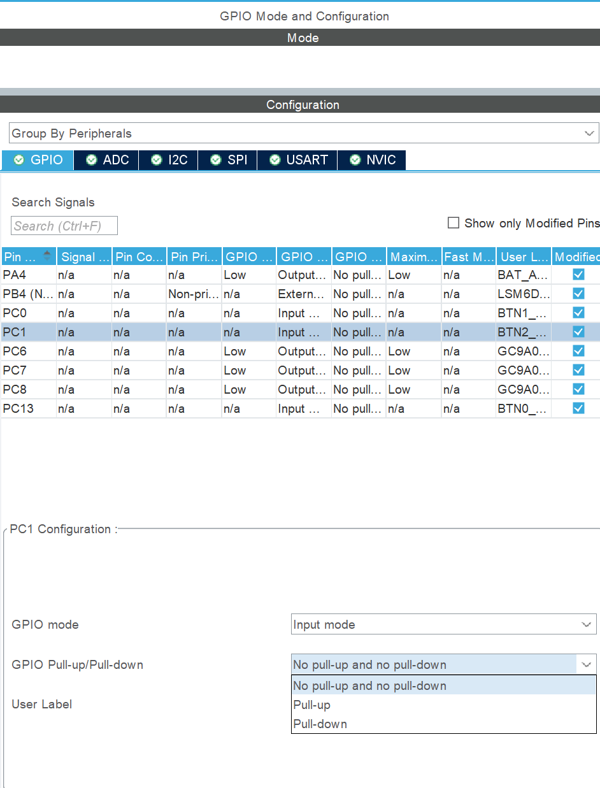
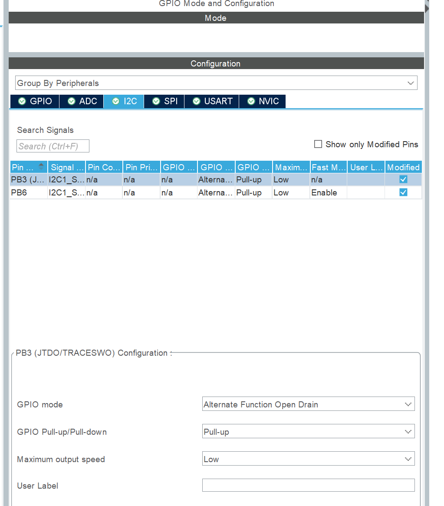

GPIO：从点亮一盏灯到读懂按钮
从电路和现象开始，逐步学会配置输入输出、使用 HAL 控制电平，再完成按钮控制灯的实验。
第 1 节 · GPIO 是什么？先认识“输出”和“输入”
假设要做一盏按键灯：按住按钮，灯亮；松开按钮，灯灭。程序需要完成两件事：知道按钮有没有按下，以及控制灯亮不亮。GPIO 就是芯片与这些外部电路打交道的一类引脚。GPIO 的英文全称是 General-Purpose Input/Output，意思是通用输入输出。
输出是程序控制引脚的电平，再通过外面的电路产生动作；输入是程序读取引脚上的电平，了解外部电路的状态。先分清这两个方向，后面的模式选择就有依据了。
| 要完成的事 | 引脚在做什么 | 选择的方向 |
|---|---|---|
| 控制 LED 亮灭 | 向外输出高、低电平 | 输出 |
| 读取按钮 | 观察外面送到引脚上的电平 | 输入 |
1.1 高、低电平首先是电压
以本章的 3.3 V 实验电路为例：引脚电压接近 0 V 时，可以直观地理解为低电平；接近 3.3 V 时，可以理解为高电平。测量电压需要一个参考点，电路中的 GND（地）就是本实验的参考点。万用表黑表笔接 GND，红表笔接要测量的引脚。
真实芯片通过电压范围判断高低，并不要求电压恰好等于 0 V 或 3.3 V。处在两者之间的电压也不一定能可靠判断。具体分界和允许电压要查芯片资料；这节先用接近两端的电压理解现象。
1.2 PA5 是怎样命名的？
STM32 把 GPIO 分成 A、B、C 等组，每组又有不同编号。PA5 表示 A 组的第 5 号引脚，PB0 表示 B 组的第 0 号引脚。不是每一种封装都会把所有编号的引脚引出来。
第 2 节 · 推挽输出：先把一盏灯点亮
这一节先只控制灯。本章选择一块已能正常运行的独立 STM32 HAL 实验板，假设 PA5 可以使用，并将它按下图连接。PA5 是本章的示例选择，不是手表板上的 LED 接线。开始接线前要核对实际开发板，确认引脚没有连接其他功能。
2.1 为什么高电平时会亮？
PA5 输出高电平时，相对 GND 有电压差。接线和 LED 方向正确时，电流从 PA5 经过电阻、LED 流向 GND，LED 就会发光。PA5 输出低电平时，这条电路两端的电压不足以使 LED 正常发光，灯熄灭。
因此，本章把“输出高 → 灯亮”的接法叫高电平有效。如果 LED 和电阻接在电源与 GPIO 之间，就可能是 GPIO 输出低时灯亮。判断灯亮灭要看接线，不能只看代码里写了 0 还是 1。
2.2 推挽是什么意思？
推挽输出可以主动把引脚拉到高电平，也可以主动把引脚拉到低电平。可以先把它想象成两条受程序控制的通路：需要高电平时接通上面的通路，需要低电平时接通下面的通路。这个模型用来理解作用，不要求现在记住内部晶体管结构。
2.3 跟着截图认识 CubeMX 的设置
在独立实验工程中进入 Pinout & Configuration，单击引脚图里的 PA5，选择 GPIO_Output。然后在左侧展开 System Core，单击 GPIO，在中间的 GPIO 表格里选中 PA5。下面的参数区就用来设置这个引脚。
先看完整面板：上面选引脚，下面改参数

图中上面的 GPIO、ADC、I2C 等是不同功能的分组页签。本节只看 GPIO 页签，其余内容到对应章节再讲。设置之前，先用下方的 Configuration 标题核对选中的是哪个引脚。
① GPIO output level：程序开始时先输出高，还是先输出低？
Low 是低电平，High 是高电平。这个选项确定 GPIO 初始化时的输出状态。第 2 节的 LED 接线是高电平点亮，因此本实验选择 Low，让灯在初始化后先保持熄灭。

初始状态不会把引脚永远固定住。程序运行后，仍然可以通过后面要学的 HAL 函数改成高或低。
② GPIO mode：选择哪一种输出方式？
Output Push Pull 就是推挽输出，可以主动输出高和低；本次点灯选择这一项。Output Open Drain 是开漏输出，只能主动拉低，或者放开引脚。第 7 节会结合上拉电阻详细讲开漏，这里先认识名字。

③ GPIO Pull-up/Pull-down：是否启用内部上下拉？
下拉菜单有三项：No pull-up and no pull-down 表示内部不启用上拉或下拉；Pull-up 表示上拉；Pull-down 表示下拉。

推挽输出已经能够主动确定高、低电平，本次 LED 接线选择 No pull-up and no pull-down。先记住本实验为什么这样选；上下拉怎样帮助按钮得到确定读数，后面单独学习。
④ Maximum output speed：本次选 Low
完整面板里，Maximum output speed 一栏显示为 Low。普通 LED 实验先选 Low 即可。这项控制的是输出电平切换边沿的快慢，不能用它设置灯一秒闪几次。
⑤ User label：给引脚取一个容易认的名字
User label 是引脚标签。比如 LED 控制脚可以取名 LED，按钮脚可以取名 BUTTON，方便在图和配置里辨认用途。改标签不会把 PA4 变成 PA5，也不会改变外部接线。本章后面的 HAL 示例直接写组别和编号，标签留空也可以理解这些示例。
最后核对：本实验的 PA5 应当是什么设置？
| 设置项 | 本实验选择 | 对应的效果 |
|---|---|---|
| GPIO output level | Low | 本章高有效 LED 初始化后先灭 |
| GPIO mode | Output Push Pull | 能主动输出高、低电平 |
| GPIO Pull-up/Pull-down | No pull-up and no pull-down | 不启用内部上下拉 |
| Maximum output speed | Low | 普通 LED 控制先使用低速边沿设置 |
| User label | 可留空，或按用途填写 | 便于辨认引脚，硬件编号不变 |
这里的 output speed 描述电平切换边沿的快慢，不是灯每秒闪几次。灯的闪烁间隔由后面代码中两次动作之间的等待时间决定。
第 3 节 · 用 HAL 写电平、翻转电平，再让灯闪烁
HAL 是 ST 提供的一套 C 库，全称 Hardware Abstraction Layer，即硬件抽象层。它提供操作硬件的函数。本章先学会调用这些函数：选中引脚，告诉它要做什么，再观察电平和灯的变化。
3.1 写电平：HAL_GPIO_WritePin
HAL_GPIO_WritePin 用来设置引脚的输出电平。“Write”在这里就是写入输出状态。它接收三个参数，没有需要接收的返回值。先看清这三个位置：
| 位置 | 本例填写 | 含义 |
|---|---|---|
| 第一个参数 | GPIOA | 选择 A 组 |
| 第二个参数 | GPIO_PIN_5 | 选择组内第 5 号引脚 |
| 第三个参数 | GPIO_PIN_SET | 设置为高电平 |
GPIOA 和 GPIO_PIN_5 都是库里已经提供的名字。后者是选择第 5 个引脚的常量，使用时写这个名字，不要直接替换成数字 5。GPIO_PIN_SET 表示高电平；要输出低电平，则使用 GPIO_PIN_RESET。
动作一 · 将 PA5 输出设为高电平，本章接线中的 LED 点亮
HAL_GPIO_WritePin(GPIOA, GPIO_PIN_5, GPIO_PIN_SET);动作二 · 将 PA5 输出设为低电平，本章接线中的 LED 熄灭
HAL_GPIO_WritePin(GPIOA, GPIO_PIN_5, GPIO_PIN_RESET);如果把这两句紧挨着执行，灯会刚被点亮就立刻熄灭，人眼通常看不出中间的变化。因此，先分别验证两个动作；需要看见亮、灭过程时，要在中间等待。
3.2 翻转电平：HAL_GPIO_TogglePin
HAL_GPIO_TogglePin 用来翻转引脚的输出状态：原来输出低，就改成高；原来输出高，就改成低。它的两个参数仍然是引脚组别和具体引脚，没有第三个电平参数，也没有需要接收的返回值。
动作三 · 将 PA5 的输出状态翻转一次
HAL_GPIO_TogglePin(GPIOA, GPIO_PIN_5);| 执行前 PA5 的输出 | 翻转一次后 | 再翻转一次后 |
|---|---|---|
| 低电平 | 高电平 | 低电平 |
| 高电平 | 低电平 | 高电平 |
3.3 等一会儿：HAL_Delay
HAL_Delay 是 HAL 提供的等待函数，参数的单位是毫秒。1000 毫秒等于 1 秒，所以 HAL_Delay(500) 表示等待约 0.5 秒。它没有需要接收的返回值。使用它需要基础工程中的 HAL 计时正常工作。
程序执行到这里，会等到这次延时结束，再继续执行下一句。此时主循环中的后续代码也要等着。这一点在以后同时处理多件事时很重要，本节先用它看清灯的变化。
组合实验 · 亮约 0.5 秒，灭约 0.5 秒，重复执行
while (1) {
HAL_GPIO_WritePin(GPIOA, GPIO_PIN_5, GPIO_PIN_SET);
HAL_Delay(500);
HAL_GPIO_WritePin(GPIOA, GPIO_PIN_5, GPIO_PIN_RESET);
HAL_Delay(500);
}这段循环放在独立实验 main 函数中已有初始化之后，替换该实验原来的空循环，不要在一个无限循环之后再加第二个无限循环。main.c 通常已经包含工程的 main.h；工程通过这些头文件提供 HAL 声明。如果编辑器无法识别函数，先确认这是正确的 HAL 工程。
等价练习 · 初始低电平，每隔约 0.5 秒翻转一次
while (1) {
HAL_GPIO_TogglePin(GPIOA, GPIO_PIN_5);
HAL_Delay(500);
}翻转间隔是 0.5 秒，但亮、灭各经历一次才是完整周期，所以这里的完整闪烁周期也约为 1 秒。实际执行还会有函数调用和循环开销，本实验不把它当作精密计时。
第 4 节 · 输入：按钮松开后，电平由谁决定？
现在增加按钮，示例选 PB0。先把 PB0 配置为输入，程序只读取电平。按钮可以理解成一个由手控制的开关：按下时连接两端，松开时断开。下面先分析电路，再写读取代码。
4.1 先看一个缺少东西的电路
按钮一端接 PB0，另一端接 GND。按下后 PB0 接地，可以读到低电平。但是松开以后，PB0 与地断开，也没有连接电源；如果没有其他电路确定它的电压，它就可能受干扰。不能因为“什么都没接”，就认为一定读到 0。
4.2 上拉输入：用电阻给松开状态一个高电平
解决办法之一，是通过电阻把引脚连接到 3.3 V 电源。这叫上拉。STM32 可以在内部接入上拉电阻，启用相应选项即可；也可以在外部电路接电阻。本节图里把电阻画出来，便于看懂连接。
松开：按钮断开，引脚通过电阻接到电源，因此是高电平。按下：按钮把引脚接到 GND，因此是低电平；电源到地的这条路径经过电阻，电流受到限制。不要把上拉理解成程序一直在给输入写 1，它是电路连接。
这种按钮接法是“按下读到低电平”，也叫低电平有效。表格里的“弱上拉”说的是电阻较大、拉动能力有限，不是说高电平只升到一半；本章先用电阻连接的图理解它。
4.3 下拉输入：用电阻给松开状态一个低电平
也可以反过来：电阻把引脚接到地，按钮把引脚接到 3.3 V 电源。这样的电阻连接叫下拉。芯片同样可以通过配置启用内部下拉电阻。
松开：引脚通过电阻接地，读到低电平。按下：按钮把引脚接到电源，读到高电平。这种接法是高电平有效。上拉和下拉都能做按钮输入，选择必须与实际按钮接线匹配。
4.4 浮空输入：内部不启用上拉或下拉
配置里的 No pull-up and no pull-down，常称为浮空输入。它只表示芯片内部不接入上下拉电阻，并不表示引脚电压永远不确定。外部已经有上拉电阻，或者有其他电路明确给出高、低电平时，内部可以不启用上下拉。
但对于本节最开始那个“按钮松开后就什么都不连接”的接法，没有内部或外部上下拉，就不能保证松开时的读数。选择方式时要同时看配置和电路。
| 输入设置与接线 | 按钮松开 | 按钮按下 |
|---|---|---|
| 上拉；按钮接 GND | 高电平 | 低电平 |
| 下拉；按钮接 3.3 V | 低电平 | 高电平 |
| 无内部上下拉 | 由外部电路决定 | 由外部电路决定 |
第 5 节 · 用 HAL 读按钮，再让按钮控制灯
5.1 先固定本次接线与配置
后面的程序统一使用：PA5 接第 2 节的高有效 LED；PB0 通过按钮接 GND，输入启用内部上拉。两种按钮接法已经认识，本次实验只使用其中一种，避免读程序时混淆。
| 引脚 | 用途 | 配置 |
|---|---|---|
| PA5 | 控制 LED | 推挽输出；无上下拉；初始输出低 |
| PB0 | 读取按钮 | 输入；Pull-up（上拉） |
在引脚图中单击 PB0，选择 GPIO_Input。再进入 System Core → GPIO，在表格里选中 PB0，确认下方标题是 PB0 Configuration，将 GPIO Pull-up/Pull-down 改成 Pull-up。

这里设置的是 PB0 的输入上拉，不要把 PA5 的 LED 输出改成输入。上拉让按钮松开时为高，按下接地后为低；配置完成后，下面的读取结果才与这条接线对应。
5.2 读取函数：HAL_GPIO_ReadPin
HAL_GPIO_ReadPin 用来读取引脚当前的高低电平。它的第一个参数选组别，第二个参数选具体引脚；与写电平函数不同，它会返回读取结果。
返回结果的类型叫 GPIO_PinState。这是 ST 在 HAL 里定义的枚举类型，有两个取值：GPIO_PIN_RESET 的值为 0，表示低电平；GPIO_PIN_SET 的值为 1，表示高电平。类型和枚举名字已经由库定义，无须在自己的文件中再定义一遍。
读取一次 · 将 PB0 当前的电平保存到 level
GPIO_PinState level = HAL_GPIO_ReadPin(GPIOB, GPIO_PIN_0);| 这一行的部分 | 解释 |
|---|---|
| GPIO_PinState | 变量使用的类型，能表示高、低电平 |
| level | 这里自行取的变量名，意思是电平 |
| HAL_GPIO_ReadPin(...) | 调用读取函数 |
| GPIOB, GPIO_PIN_0 | 选择 PB0 |
| = | 把函数返回的电平保存到 level |
本次按钮使用上拉，所以松开时 level 应为 GPIO_PIN_SET，按下时应为 GPIO_PIN_RESET。电平的 0/1 与“有没有按下”是两件需要结合接线解释的事。
5.3 先只观察读取结果
在独立实验主循环中，反复读取按钮，并把当前电平保存到 level。为便于在调试器里观察，这个实验把变量声明为 volatile：告诉编译器按需要保留对这个变量的访问。它不会改变按钮电压，也不会自动消除抖动。
观察实验 · 放在 main 中已有初始化之后；用调试器观察 level
volatile GPIO_PinState level = GPIO_PIN_SET;
while (1) {
level = HAL_GPIO_ReadPin(GPIOB, GPIO_PIN_0);
}可以在赋值语句之后设断点，继续执行，再检查变量。分别在松开、按下状态停住观察；停在断点时程序已经暂停，不会继续读按钮，需要继续运行才会更新。若优化使局部变量不便观察，使用基础工程的 Debug 配置。
5.4 把已经学会的读、判断、写连起来
现在目标是“按住灯亮，松开灯灭”。先用自然语言写规则：读取 PB0；如果读到低电平，说明按钮按下，让 PA5 输出高；否则让 PA5 输出低。这里没有需要学习的新 HAL 函数。
组合实验 · 替换上一个观察实验的循环；不是把两个循环连续放在一起
while (1) {
GPIO_PinState level = HAL_GPIO_ReadPin(GPIOB, GPIO_PIN_0);
if (level == GPIO_PIN_RESET) {
HAL_GPIO_WritePin(GPIOA, GPIO_PIN_5, GPIO_PIN_SET);
} else {
HAL_GPIO_WritePin(GPIOA, GPIO_PIN_5, GPIO_PIN_RESET);
}
}| 实际状态 | PB0 读数 | 进入哪条分支 | PA5 输出 / 灯 |
|---|---|---|---|
| 按钮松开 | SET（高） | else | 低 / 灭 |
| 按钮按下 | RESET（低） | if | 高 / 亮 |
这段代码中的 level 在当前循环内使用，读取后马上参与判断，不需要沿用观察实验的 volatile。主循环不断重复读取和控制，这种反复检查输入的方式叫轮询。
第 6 节 · 一次按下为什么可能触发很多次？
6.1 按住期间，循环会反复读到低电平
前一节只是持续控制灯，反复写同样的状态没有问题。但如果希望“每按一次就翻转一次灯”，直接在低电平分支调用翻转函数就会出问题：手指按住的这段时间里，循环执行了很多轮，每一轮都可能翻转。
反例 · 只展示问题，不作为最终按钮处理方式
/* 用来观察问题的写法：按住期间会反复翻转。 */
if (HAL_GPIO_ReadPin(GPIOB, GPIO_PIN_0) == GPIO_PIN_RESET) {
HAL_GPIO_TogglePin(GPIOA, GPIO_PIN_5);
}先记住上一次电平，只在“上一次高，这一次低”时执行一次。上一次高表示松开，这一次低表示按下；这个由高变低的变化叫下降沿。在这里用程序比较前后两次读数，就能识别这次变化。
第一步 · 解决持续按住导致的重复；默认实验开始时按钮松开
GPIO_PinState previous = GPIO_PIN_SET;
while (1) {
GPIO_PinState current = HAL_GPIO_ReadPin(GPIOB, GPIO_PIN_0);
if (previous == GPIO_PIN_SET && current == GPIO_PIN_RESET) {
HAL_GPIO_TogglePin(GPIOA, GPIO_PIN_5);
}
previous = current;
}previous 声明在循环外，保存上一轮的结果；current 是本轮刚读到的结果。判断结束后才更新 previous，否则比较的就成了同一次读数。这个版本能处理持续按住，但还没有处理真实按钮的机械抖动。
6.2 机械接点会抖动
手指的一次按动，在电路里不一定只有一次干净的通断。金属接点碰到一起时可能短暂弹开再碰上，产生多次高低变化。程序读得快，就可能把这些变化当成多次按下。
6.3 用一个简单等待实验认识消抖
消抖的目标是确认状态稳定，减少把短暂变化当成有效操作。先采用容易观察的方案：发现低电平后等 20 ms，再确认仍为低；确认按下后执行一次翻转，然后等待松开。20 ms 是练习起点，要结合实际按钮调整。
第二步 · 阻塞式消抖练习，只用于这个单按钮独立实验
while (1) {
if (HAL_GPIO_ReadPin(GPIOB, GPIO_PIN_0) == GPIO_PIN_RESET) {
HAL_Delay(20);
if (HAL_GPIO_ReadPin(GPIOB, GPIO_PIN_0) == GPIO_PIN_RESET) {
HAL_GPIO_TogglePin(GPIOA, GPIO_PIN_5);
while (HAL_GPIO_ReadPin(GPIOB, GPIO_PIN_0) == GPIO_PIN_RESET) {
/* 仍然按住：等待松开。 */
}
HAL_Delay(20);
}
}
}第二次读取排除一部分短暂变化，内层循环避免按住期间反复翻转，松开后的等待用于避开一部分释放抖动。它是简化练习：只检查等待前后的状态，没有证明整个等待期间始终稳定，极短按动可能漏掉，严重抖动也可能处理不好。
更明显的代价是：按住不松手时，程序一直留在内层循环，主循环里的其他工作无法继续。以后在裸机综合部分，会用时间记录和状态管理改成能同时处理其他工作的方案。本节先把现象、原因和简单处理的作用看懂。
第 7 节 · 再认识开漏：拉低，或者放开
已经理解上下拉后，再看另一种输出方式：开漏输出。与推挽相比，它能主动拉低引脚；设置到另一种状态时，则放开引脚，不主动提供高电平。要得到高电平，需要有合适的上拉连接。
| 输出方式 | 写 RESET 时 | 写 SET 时 |
|---|---|---|
| 推挽输出 | 主动输出低电平 | 主动输出高电平 |
| 开漏输出 | 主动拉低 | 释放引脚；有上拉时可变高 |
可以想象只有一个通向地的受控开关：开关闭合，引脚接地；开关断开，引脚与地断开。上拉电阻负责在开关断开时把引脚拉到高电平。没有上拉或其他确定电压的电路，单纯“放开”不能保证变高。
HAL 的写电平函数仍然是前面学过的 HAL_GPIO_WritePin。变化的是引脚配置为 Output Open Drain 后，相同写入动作在硬件上的含义。名字里有 SET，并不意味着所有输出模式都能主动拉高。
7.1 再认识“复用”：这个引脚交给谁控制？
前面点灯时，是程序调用 HAL 函数决定引脚输出高还是低。芯片里还有专门完成其他工作的硬件电路，需要通过引脚与外面连接。选择复用模式，就是把引脚交给选定的硬件功能控制；要连接哪一种功能，还需要在配置中选对。
这里分清两个问题就够了：普通输出还是复用，决定由谁控制输出；推挽还是开漏，决定怎样产生电平。因此“复用”和“推挽”并不矛盾，也可以组合成“复用开漏”。
| 界面名称 | 对应名称 | 由谁决定输出动作 | 输出能做什么 |
|---|---|---|---|
| Output Push Pull | 普通推挽输出 | 程序通过 GPIO 接口控制 | 主动拉高、主动拉低 |
| Output Open Drain | 普通开漏输出 | 程序通过 GPIO 接口控制 | 拉低，或释放 |
| Alternate Function Push Pull | 复用推挽 | 选定的片内硬件功能 | 主动拉高、主动拉低 |
| Alternate Function Open Drain | 复用开漏 | 选定的片内硬件功能 | 拉低，或释放 |
本次 PA5 点灯使用普通推挽输出。先掌握它与两个复用名称的区别；具体硬件功能怎样工作，到后面的通信章节再逐步学习。
看一张复用配置实图：先只认模式名称

图中 I2C 页签和其他参数在对应章节解释；这里仅用来识别“复用开漏”这个设置，暂时不用理解通信过程。
回到手表 · 把原理、配置和实际代码对起来
完成独立实验后，再阅读手表工程。先打开 Core/Inc/main.h 查引脚名字，再看 Core/Src/gpio.c 的配置。当前 PC0、PC1 是输入上拉的两个按钮脚。不要把独立实验中的 PA5、PB0 接线直接套到手表。
看到 GPIO_InitTypeDef 时，先认清它的用途
GPIO_InitTypeDef 是 HAL 已定义的一个结构体类型，用于存放“要把引脚配置成什么样”的信息。它不表示某一个引脚，也不表示高低电平。代码先填配置，再调用初始化函数把配置应用到硬件。这里是已经学会使用之后，对现有初始化代码的一次对照阅读。
下面采用简短变量名 cfg，说明输入上拉的配置含义。GPIO_PIN_0 选择 0 号引脚；GPIO_MODE_INPUT 表示输入；GPIO_PULLUP 表示启用上拉。HAL_GPIO_Init 的第一个参数选组别，第二个参数传配置变量的地址，供函数读取。
阅读示例 · 表达 PC0 输入上拉的配置，不是替换现有初始化的补丁
GPIO_InitTypeDef cfg = {0};
cfg.Pin = GPIO_PIN_0;
cfg.Mode = GPIO_MODE_INPUT;
cfg.Pull = GPIO_PULLUP;
HAL_GPIO_Init(GPIOC, &cfg);前四行创建并填写配置数据；最后一行把它交给初始化函数。{0} 将成员先置零，不能替代填写所需设置。实际项目里变量叫 GPIO_InitStruct，作用相同。完整初始化还需要外围准备，例如先让对应 GPIO 模块获得工作时钟；此处只对照这一段，时钟部分到相应课程再展开。
阅读时做三件事：找到这段配置属于哪个组、哪些引脚；找到输入/输出和上下拉选项；再去应用代码找它在哪里被读取或写入。遇到本章没讲的配置先做标记，继续追踪按钮这条已知路径即可。
排错与验收 · 用观察结果缩小问题范围
| 观察到的现象 | 先检查什么 | 为什么 |
|---|---|---|
| 写高后灯不亮 | LED 接线方向、电阻、实际引脚、是否为推挽输出 | 函数参数正确也不能代替电路与模式正确 |
| 写低时灯反而亮 | LED 是否接在电源与引脚之间 | 低有效接线需要相反的点亮逻辑 |
| 按钮一直读低 | 是否按住或短接到地，是否误选下拉 | 松开、按下都低就无法区分两种状态 |
| 按钮松开时读数乱跳 | 是否缺少上下拉、连接是否可靠 | 没有确定电压的输入可能受干扰 |
| 按一次翻转多次 | 是否按住时重复执行、是否有机械抖动 | 持续电平与一次动作需要分别处理 |
| 程序似乎停住 | 是否正等在按键释放循环或延时中 | 等待期间不会继续执行后面的主循环代码 |
读完后，应当能够独立完成
- 画出高有效 LED 电路，以及上拉、下拉两种按钮电路，标出按下和松开时的电平。
- 说明 GPIOA 与 GPIO_PIN_5 分别选了什么，并使用写、读、翻转三个函数。
- 实现“按住亮、松开灭”，再调整成相反效果，解释每处改动。
- 解释长按重复与机械抖动的区别，指出简单消抖程序会在哪里等待。
- 解释开漏为什么需要区分“主动输出高”和“释放后被上拉到高”。
不用一次记住所有英文名字。第一次写代码时可以查本章的参数表；需要掌握的是每个动作为什么存在，以及修改后会产生什么现象。
最后检查一次理解
参考与继续阅读
参考用于核对概念和接口；不同系列、库版本与开发板的参数不可直接互换。课程按本仓库现状说明项目，完整资料索引见 来源与版本。